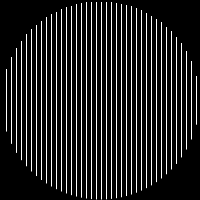
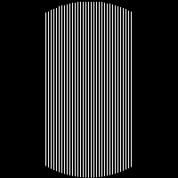
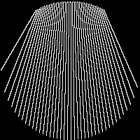
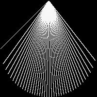
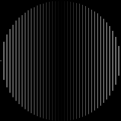
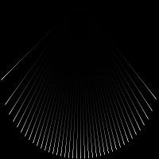

Specify Different Geometries and Absorption
RadonKA.jl offers two different geometries right now. See also this pluto notebook
The simple and default interface is RadonParallelCircle. This traces the rays parallel through the volume. However, only rays inside a circle of the image are considered.
RadonParallelCircle
See also the RadonParallelCircle docstring. The essence is the specification of a range or vector where the incoming position of a ray is. This is with respect to the center pixel at div(N, 2) +1.
Parallel
The first example is the default. Just a parallel ray geometry.
angles = [0]
# output image size
N = 200
sinogram = zeros((N - 1, length(angles)))
sinogram[1:5:end] .= 1
geometry_parallel = RadonParallelCircle(N, -(N-1)÷2:(N-1)÷2)
projection_parallel = backproject(sinogram, angles; geometry=geometry_parallel);
simshow(projection_parallel)
Parallel Small
sinogram_small = zeros((99, length(angles)))
sinogram_small[1:3:end] .= 1
geometry_small = RadonParallelCircle(200, -49:49)
projection_small = backproject(sinogram_small, angles; geometry=geometry_small);
simshow(projection_small)
RadonFlexibleCircle
See also the RadonFlexibleCircle docstring. This interface has a simple API but is quite powerful. The first range indicates the position upon entrance in the circle. The second range indicates the position upon exit of the circle.
fan Beam
geometry_fan = RadonFlexibleCircle(N, -(N-1)÷2:(N-1)÷2, range(-(N-1)÷4, (N-1)÷4, N-1))
projected_fan = backproject(sinogram, angles; geometry=geometry_fan);
simshow(projected_fan, γ=0.01)
geometry_extreme = RadonFlexibleCircle(N, -(N-1)÷2:(N-1)÷2, zeros((199,)))
projected_extreme = backproject(sinogram, angles; geometry=geometry_extreme);
simshow(projected_extreme, γ=0.01)
Using Different weighting
For example, if in your application some rays are stronger than others you can include weight factor array into the API.
geometry_weight = RadonParallelCircle(N, -(N-1)÷2:(N-1)÷2, abs.(-(N-1)÷2:(N-1)÷2))
projection_weight = backproject(sinogram, angles; geometry=geometry_weight);
simshow(projection_weight)
Absorption
The ray gets some attenuation with exp(-μ*x) where x is the distance traveled to the entry point of the circle. μ is in units of pixel.
projected_exp = backproject(sinogram, angles; geometry=geometry_extreme, μ=0.04);
simshow(projected_exp)